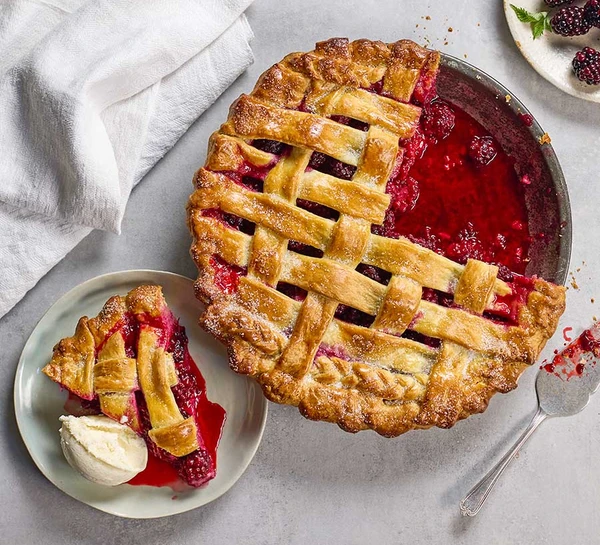

Pie

Description
Combine two classic sweets – poached pears and a fruit pie – to make this stunning dessert with a decorative top to impress your dinner guests.
Ingredients
- plain flour, for dusting
- 300g sweet shortcrust pastry
- freshly grated nutmeg
- 1 egg, beaten
- 1 tbsp demerara sugar
- custard, cream or ice cream, to serve
- 75g white caster sugar
- 1 lemon, pared
- 5 cardamom pods
- ½ nutmeg
- 1 cinnamon stick
- 3 small pears, peeled cored and halved
- 3-4 small pears, peeled cored and chopped
- 75g white caster sugar
- 2 tsp cornflour
- 2 tbsp ground almonds
- 150g berries (we used raspberries and blackberries)
Steps
- To make the poached pears, put the sugar in a big saucepan with the lemon peel, cardamom pods, nutmeg, cinnamon and 1 litre water. Bring to a gentle simmer. Lower the pear halves into the liquid and place a circle of baking parchment on top, so they cook through properly. Leave over a medium heat, so that a few bubbles break the surface every now and then, and cook for 15 mins. Allow to cool in the liquid. Can be chilled overnight if making ahead.
- Heat oven to 180C/160C fan/gas 4. Dust the work surface with a little plain flour. Roll out the pastry so it’s big enough to line a 20-23cm frying pan, pie dish or shallow baking tin. Grate a little nutmeg over the surface, then gently roll again to help it stick. Lift over your dish, press into the corners, then trim the edges. You can give it a pretty crimped edge, if you like, then wrap the off-cuts in cling film and keep in the fridge until needed. Scrunch up a sheet of baking parchment, unfold, and lay it over the pastry. Fill with baking beans and bake for 15 mins. Remove the beans and parchment, brush with some of the beaten egg and return to the oven for another 5 mins.
- Meanwhile, make the filling. Cook the remaining pears and sugar in a small pan until the pears are soft enough to squash with the back of a spoon. Drain off 3 tbsp of the poaching liquid and mix this with the cornflour, then pour back into the pears and continue cooking and squashing for another minute or so, until the filling has thickened.
- Sprinkle the ground almonds over the pastry case, then add the squashed pear mixture and scatter over the berries. Remove the poached pears from their liquid and blot them on some kitchen paper. Arrange them face-up among the pear mixture and berries. Using a mini pastry cutter, cut little shapes from the leftover pastry, then arrange them on top. Brush the pastry pieces with beaten egg and sprinkle with the demerara sugar. Bake for 45-50 mins until the pastry is golden and berry juice is bubbling. Cool for 10-15 mins before serving with custard, cream or ice cream, if you like.